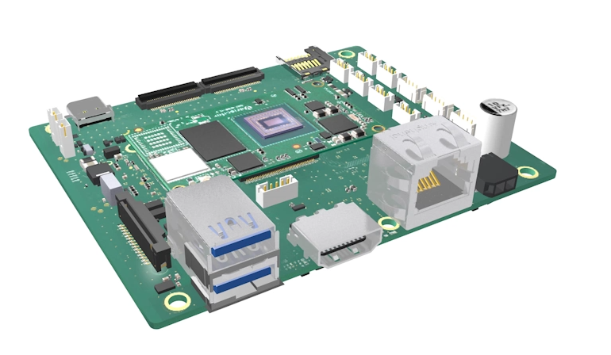

prB-IMX8MP#

Kit Contents#
The kit contains the following components:
- Basler Embedded Vision processing board
- microSD card with preinstalled system software
- Power supply: 12 VDC @ 3 A, AC/DC adapter
Processing Board#
General Specifications#
| prB-IMX8MP | |
|---|---|
| SoC | NXP i.MX 8M Plus |
| Memory | 8 GB |
| On-board Memory | 64 GB |
| External Storage | microSD card slot |
| Video | HDMI2.0a, up to 1080p60 resolution |
| Camera Support | daA2500-60mc, daA3840-30mc, daA2500-60mci, daA4200-30mci |
| Audio | Line-In / Mic-In |
| Connectivity | 2x MIPI-CSI 2, 2x USB 3.0, GigE, HDMI, GPIOs, I2C, SPI, LVDS, UART, CAN, USB 2.0, M 2.0, Bluetooth, Wi-Fi |
| Power Requirements | 7 W (typical) @ 12–24 VDC |
| Dimensions | 100 mm x 80 mm |
| Weight | 140 g including 2 BCON for MIPI cameras and heatsink |
| Conformity | CE, FCC, RoHS, WEEE, REACH |
| Operating System | Linux Yocto Basler pylon API and Basler camera drivers included |
Environmental Requirements#
| Description | Temperature |
|---|---|
| Temperature during operation | 0–50 °C (32–122 °F) |
| Humidity during operation | 5–90 %, relative, non-condensing |
| Storage temperature | -50–80 °C (-58–176 °F) |
| Storage humidity | 5–95 %, relative, non-condensing |
Allow sufficient air circulation to keep the temperature during operation below 50 °C. Additional cooling devices aren't normally required, but should be provided, if necessary.
Physical Interface#
NOTICE – Supplying power before the hardware installation is completed can damage camera and board components.
Only connect the power supply to the mains socket when the hardware installation of all embedded vision system components is completed.
Top Side#

Bottom Side#
Power Supply Connector (1)#
Connector: Molex 1054301102 NanoFit 2-pin
| Pin | Function | Position (Viewed from Front Side) |
|---|---|---|
| 1 | 12–24 VDC | Right |
| 2 | GND | Left |
The board can be supplied with 12–24 VDC.
The power supplies on the board are designed for 35 W overall power consumption.
These 35 W are distributed via the different voltage levels used on the board and for devices connected to the board.
If the devices connected to the board require more power, the power supplies on the board may not be sufficient.
Contact Basler to check whether your specific setup can be operated with the internal power supplies.
GigE (2)#
Connector: RJ45 with LEDs in housing
The yellow LED (right side) indicates activity. The green LED (left side) indicates 1000 Mbps traffic.
USB 3.0 (3)#
- 2 x USB-A 3.0 stacked
These USB ports are connected via USB hub to the second USB port of the SoM.
HDMI (4)#
Connector: Standard HDMI connector MVM-96 Resolved
JDE: select Molex HDMI 2.1 connector (2086581081)
Standard: HDMI 2.0a (as given in NXP Reference Manual), 1080p60
MIPI-DSI (5)#
Connector: TE 1-1734248-5
Do not hot-plug!
- 2-lane MIPI DSI display port
- 1.0 mm raster
| Pin # | Function |
|---|---|
| 1 | Ground |
| 2 | Data Lane 1 N |
| 3 | Data Lane 1 P |
| 4 | Ground |
| 5 | Clock N |
| 6 | Clock P |
| 7 | Ground |
| 8 | Data Lane 0 N |
| 9 | Data Lane 0 P |
| 10 | Ground |
| 11 | SCL |
| 12 | SDA |
| 13 | Ground |
| 14 | +3.3 VDC |
| 15 | +3.3 VDC |
Trigger (6)#
Connector: W2B, 4-pol, 180, JST, 1 mm, SMT
JST; BM04B-SRSS-TBT(LF)(SN)
Mating Connector: Select the mating 4-pin connector that fits your requirements from the JST SH (crimp-style) or SR/SZ (IDC-style) connector family.
Do not hot-plug!
| Pin # | Function | Notes |
|---|---|---|
| 1 | 1.8 VDC | |
| 2 | Trigger Cam 0 | Connected to GPIO 71 (optional: directly to cam 0) |
| 3 | Trigger Cam 1 | Connected to GPIO 65 (optional: directly to cam 1) |
| 4 | Ground |
The trigger inputs can be used to directly trigger the camera.
By default, the connector is not connected to the trigger, but a GPIO can be used.
It can either be completely software driven via the GPIO towards the camera, or the software can handle an incoming GPIO signal and use it to trigger.
The below image shows the basic trigger options available in hardware. Further options (e.g. cam-sync, sync-out) are prepared on the board and available depending on the camera.
The image below shows the resistor placement around the trigger connector:
The below image shows the resistor placement at the BCON for MIPI camera connector:

Basler highly recommends using opto-couplers to isolate the trigger generator from the board. Therefore, the board provides 1.8 VDC and GND on the connector.
The power supply here is only for the secondary side of opto-couplers. Don't connect any other load here.
Using a Software Trigger to Trigger a Camera#
If R XXX and/or R XXX are installed, cameras can be triggered from software.
Therefore, you can use /sys/class/gpio either from the command line or from within program code.
For the usage of SysFS with GPIOs, see the Linux SysFS GPIO Documentation.
echo 71 > /sys/class/gpio/export
echo out > /sys/class/gpio/gpio71/direction
echo 0 > /sys/class/gpio/gpio71/value
echo 1 > /sys/class/gpio/gpio71/value
echo 65 > /sys/class/gpio/export
echo out > /sys/class/gpio/gpio65/direction
echo 0 > /sys/class/gpio/gpio65/value
echo 1 > /sys/class/gpio/gpio65/value
JTAG (7)#
Connector: Samtec FTSH-105-01-L-DV-K-P-TR 1.27 mm, 2 Row, 10 Positions
Do not hot-plug!
Boot-Header (8)#
Connector: 2.54 mm 2-pin Header
Do not hot-plug!
If this header is shorted by a jumper, the board boots from SD card.
If this header is open, the board boots from eMMC.
A mating jumper is supplied with the development kit version of the board.
microSIM Card Socket (9)#
This microSIM card socket is directly connected to the M.2 connector for use with appropriate M.2 modules.
| SIM pad # | M.2 Pin |
|---|---|
| USIM_RESET | 30 |
| USIM_CLK | 32 |
| USIM_DATA | 34 |
| USIM_POWER | 36 |
BCON for MIPI (10, 11)#
→ See BCON for MIPI Interface Description.
Do not hot-plug!
The MIPI specification allows cable lengtht up to 300 mm. Since some length is already used on the board and on the camera we recommend the BCON for MIPI cable up to a length of 200 mm.
IF you require longer connections this might work in your specific environment. We recommend to connect the longer connection to "CAM1" since it has shorter signal lines on the PCB.
USB-C Debug-Port (12)#
This USB-C connector is directly connected to the first USB port of the NXP SoC. It is foreseen as a debug port.
It can be used for update purpose (uuu) during development and production.
It's not possible to power the board via this connector.
Audio (13, 14)#
Connector: W2B, 3-pol, 180°, JST, 1 mm, SMT
JST; BM03B-SRSS-TBT(LF)(SN)
Mating Connector: Select the mating 3-pin connector that fits your requirements from the JST SH (crimp-style) or SR/SZ (IDC-style) connector family.
Do not hot-plug!
Analog stereo line input and headphone output is available at two separate 3-pol JST 1 mm pitch vertical connectors.
Headphone-out (13)
| Pin # | Function |
|---|---|
| 1 | Right |
| 2 | Left |
| 3 | AGND |
Line-in (14)
| Pin # | Function |
|---|---|
| 1 | Right |
| 2 | Left |
| 3 | AGND |
FAN (15)#
Connector: W2B, 3-pol, 180°, JST, 1 mm, SMT
JST; BM03B-SRSS-TBT(LF)(SN)
Mating Connector: Select the mating 3-pin connector that fits your requirements from the JST SH (crimp-style) or SR/SZ (IDC-style) connector family.
Do not hot-plug!
HW Configuration Option: For customer designs, there is an option to set 5 VDC instead of PWM signal.
PWM is GPIO4_IO30 on the SoM.
| Pin # | Function |
|---|---|
| 1 | GND |
| 2 | PWM 5 VDC |
| 3 | Tacho 3.3 VDC |
Maximum load: 5 VDC and 0.25 A
I2C (I2C) (16)#
Connector: JST 4-pol vertical 1 mm
JST; BM04B-SRSS-TBT(LF)(SN)
Mating Connector: Select the mating 4-pin connector that fits your requirements from the JST SH (crimp-style) or SR/SZ (IDC-style) connector family.
Do not hot-plug!
The power supply here is solely for the use with a simple I2C component and not intended as a power supply for customer circuitry.
| Pin # | Function |
|---|---|
| 1 | 3.3 VDC (max. 150 mA) |
| 2 | SCL |
| 3 | SDA |
| 4 | Ground |
GPIOs (17)#
Connector: JST 1 mm, 10 pol vertical
JST; BM10B-SRSS-TBT(LF)(SN)
Mating Connector: Select the mating 10-pin connector that fits your requirements from the JST SH (crimp-style) or SR/SZ (IDC-style) connector family.
Level: 3.3 VDC
Do not hot-plug!
There is no power supply voltage provided on this pin since loads here can't be estimated. Design your circuitry here with your own power supply.
| Pin # | Function | @SoM |
|---|---|---|
| 1 | Input 1 | GPIO 102 - SAI1_RXD4 |
| 2 | Input 2 | GPIO 104 - SAI1_RXD6 |
| 3 | Input 3 | GPIO 109 - SAI1_TXD1 |
| 4 | Input 4 | GPIO 105 - SAI1_RXD7 |
| 5 | GND | |
| 6 | GND | |
| 7 | Output 1 | GPIO 123 - SAI2_MCLK |
| 8 | Output 2 | GPIO 121 - SAI2_TXC |
| 9 | Output 3 | GPIO 96 - SAI1_RXFFS |
| 10 | Output 4 | GPIO 97 - SAI1_RXC |
Configuration and Use of Input Pins#
For the usage of SysFS with GPIOs, see the Linux SysFS GPIO Documentation
Enable input pins:
echo 5 > /sys/class/gpio/export;
echo out > /sys/class/gpio/gpio5/direction;
echo 0 > /sys/class/gpio/gpio5/value;
Configure input pins:
echo 102 > /sys/class/gpio/export;
echo 104 > /sys/class/gpio/export;
echo 109 > /sys/class/gpio/export;
echo 105 > /sys/class/gpio/export;
Configure output pins:
echo 123 > /sys/class/gpio/export;
echo 121 > /sys/class/gpio/export;
echo 96 > /sys/class/gpio/export;
echo 97 > /sys/class/gpio/export;
echo out > /sys/class/gpio/gpio123/direction;
echo out > /sys/class/gpio/gpio121/direction;
echo out > /sys/class/gpio/gpio96/direction;
echo out > /sys/class/gpio/gpio97/direction;
Input 1:
cat /sys/class/gpio/gpio102/value;
Input 2:
cat /sys/class/gpio/gpio104/value;
Input 3:
cat /sys/class/gpio/gpio109/value;
Input 4:
cat /sys/class/gpio/gpio105/value;
Use of Output Pins#
Set output values:
Output 1:
echo 0 > /sys/class/gpio/gpio123/value;
echo 1 > /sys/class/gpio/gpio123/value;
Output 2:
echo 0 > /sys/class/gpio/gpio121/value;
echo 1 > /sys/class/gpio/gpio121/value;
Output 3:
echo 0 > /sys/class/gpio/gpio96/value;
echo 1 > /sys/class/gpio/gpio96/value;
Output 4:
echo 0 > /sys/class/gpio/gpio97/value;
echo 1 > /sys/class/gpio/gpio97/value;
Interrupt Configuration#
The tested port must be configured as input.
Use the following command to configure that a rising edge at this port can generate an interrupt:
echo rising > /sys/class/gpio/gpio102/edge;
echo rising > /sys/class/gpio/gpio104/edge;
echo rising > /sys/class/gpio/gpio109/edge;
echo rising > /sys/class/gpio/gpio105/edge;
Toggle the signal at the tested port between low and high and verify that the interrupt is identified.
Use following command to read the identified interrupts:
cat /proc/interrupts
Example output:
56: 15 0 0 0 gpio-mxc 4 Edge gpiolib
In this example, row 56 shows that 15 interrupts from one of the four CPUs are identified from port 4.
CAN-FD (18)#
Connector: W2B, 3-pol, 180°, JST, 1 mm, SMT
JST; BM03B-SRSS-TBT(LF)(SN)
Mating Connector: Select the mating 3-pin connector that fits your requirements from the JST SH (crimp-style) or SR/SZ (IDC-style) connector family.
Do not hot-plug!
| Pin # | Function |
|---|---|
| 1 | CAN-High |
| 2 | CAN-Low |
| 3 | GND |
Termination isn't installed by default. The device offers the possibility to install termination.
SPI (19)#
Connector: 6-pin JST vertical 1 mm
JST; BM06B-SRSS-TBT(LF)(SN)
Mating Connector: Select the mating 6-pin connector that fits your requirements from the JST SH (crimp-style) or SR/SZ (IDC-style) connector family.
Do not hot-plug!
This SPI connector uses the SPI 3 interface from the SoM.
The power supply here is solely for the use with a simple SPI component and not intended as a power supply for customer circuitry.
| Pin # | Function |
|---|---|
| 1 | GND |
| 2 | SCKL |
| 3 | 3.3 VDC |
| 4 | MISO |
| 5 | MOSI |
| 6 | SSO |
UART/FTDI (20, 21)#
Connector: 6-pin JST vertical 1 mm
JST; BM06B-SRSS-TBT(LF)(SN)
Mating Connector: Select the mating 6-pin connector that fits your requirements from the JST SH (crimp-style) or SR/SZ (IDC-style) connector family.
Do not hot-plug!
- Connector 20 (marked "FTDI") is connected to UART 3 of the SoM.
- Connector 21 (marked "UART") is connected to UART 1 of the SoM.
| Pin # | Function |
|---|---|
| 1 | GND |
| 2 | CTS |
| 3 | 3.3 VDC |
| 4 | TXD |
| 5 | RXD |
| 6 | RTS |
USB 2.0 Onboard (22)#
Connector: W2B, 5-pol, 180°, JST, 2 mm, SMT
JST; B5B-PH-SM4-TBT(LF)(SN)
Mating Connector: Select the mating 5-pin connector that fits your requirements from the JST PH (crimp-style) connector family.
| Pin # | Function |
|---|---|
| 1 | 5 VDC |
| 2 | DS- |
| 3 | DS+ |
| 4 | GND |
| 5 | GND |
This USB port is connected via USB hub to the second USB port of the SoM.
microSD Card Slot (23)#
This is a standard microSD card slot.
Battery Holder for Realtime Clock (24)#
Can be used to support the Realtime Clock with a CR3032 3 VDC battery.
M.2 (25)#
Connector: M.2 with B-notch
Do not hot-plug!
This connector is configured and tested for use with the following devices:
- M.2 2242 SSD with PCIe connection (SSDs with SATA connection aren't supported)
- M.2 2242 / 3042 network cards for HSDPA / LTE / 5G etc.
PCIe lanes:
- NXP i.MX8 M Plus: One lane is supported
- Other SoM modules may offer two lanes. Contact Basler support for more information.
Status LEDs#
- 1 single color LED: Indicates 5 VDC (first voltage, only on board)
- 1 single color LED: Indicates PowerOn green (connect to 3.3 VDC from the SoM)
- 1 dual color LED: Configurable 2-color status LED (red/green) by GPIO
The LED is positioned so that it can be connected with, e.g., a front plate using light fiber or light plastic.
Red LED ON:
echo 0 > /sys/class/leds/led_red/brightness
Red LED OFF:
echo 1 > /sys/class/leds/led_red/brightness
Green LED ON:
echo 0 > /sys/class/leds/led_green/brightness
Green LED OFF:
echo 1 > /sys/class/leds/led_green/brightness
Hardware Installation#
NOTICE – Supplying power before the hardware installation is completed can damage camera and board components.
Only connect the power supply to the mains socket when the hardware installation of all embedded vision system components is completed.
To install and connect the components provided in this kit:
- Insert the microSD card into the SD card slot on the bottom side of the board.
- Connect the camera(s) with the 0.2 m FFC cable to the board. To do so:
- Open the black locking bar on the FFC connector.
- Push the end of the cable firmly into the FFC connector with the blue color facing away from the camera. See image below.
- Re-lock the connector by pushing the locking bar back into its original position.
- Connect the other end of the 0.2 m FFC cable to the connector on the board. Make sure that the blue part of the cable faces up from the board.
- Connect network, display, and input devices to the board.
- Connect the power supply to the board.
Info
- The device uses DHCP by default to retrieve an IP connection.
- The device identifies itself by the hostname
imx8mp-visionbox. In a properly set up network, it should be possible to connect to the device, e.g., usingssh root@imx8mp-visionbox.local.
Configure Device Tree for BCON for MIPI Camera Access#
On first start of the device or when a new root file system is flashed, you have to configure the device tree. Otherwise, no MIPI camera will show up in the pylon Viewer.
The board can be used with a variety of cameras. For the MIPI cameras, two basic modes are available:
- Via ISP of the NXP i.MX8, e.g., for daA3840-30mc camera modules
- Via ISI of the NXP i.MX8, e.g., for daA2500-60mci or daA4200-30mci camera modules
To configure the device tree:
- Open the Tools menu and select the Device Tree Setup tool.

- For default settings, leave all entries set to Auto.
- Enable the required entries:
- Select ISI0 for a single camera of type daA2500-60mci, daA4200-30mci.
- Select ISI1 for a second camera of type daA2500-60mci, daA4200-30mci.
- Select ISP0 for a single camera of type daA3840-30mc with resolution up to 4K.
- Select ISP0_ISP1 for two cameras of type daA3840-30mc with resolution up to Full HD.
- For other options or cameras, contact Basler support.
- Save the settings and wait for the restart.
After the restart, the cameras will appear in the pylon Viewer.
ISI0 and ISP0 refer to the BCON for MIPI connector marked "CAM 1".
ISI1 and ISP1 refer to the BCON for MIPI connector marked "CAM 2".
When selecting the ISP0_ISP1 option, the cameras will deliver a Full HD image. You will be able to configure the camera in pylon Viewer for up to 4K resolution, but images will be upscaled.
For 4K operation, select the single camera ISP0 option. The NXP i.MX8 M Plus does not support 4K for dual cam with the ISP.
Acquiring Your First Images#
To acquire your first images:
- Make sure to configure the device tree correctly as described in the above section.
- Start the pylon Viewer from console.
The pylon Viewer application lets you configure the camera, acquire and save images, and more. - In the pylon Viewer, open the camera device.
- Click the Continuous Shot icon to start image acquisition.
For more information about the Basler pylon Camera Software Suite and on how to develop your vision applications using the SDK, visit www.baslerweb.com/pylon.
For USB cameras, addtional settings in Linux are required. Check the documentation of the respective camera.
Software Installation#
This Basler Embedded Vision Development Kit comes with a pre-loaded system image on the microSD card.
If you only want to flash a new image onto the system:
- Download the appropriate image file from the product page.
- Follow the instructions in the following sections:
If you want to build a new Yocto Linux system from scratch:
- Set up a supported Linux build environment. Basler tested this release on Ubuntu 20.04.2 LTS.
- Download the TAR archive from the product page.
- Unpack the TAR archive:
tar xfJ <FILENAME>.tar.xz - Change to the directory where the TAR archive has been unpacked.
- Check the README.txt file for specific build instructions for the current release or follow the standard procedure outlined below.
mkdir buildcd build../setup_yocto_build_directory.sh --machine imx8mp-visionbox --manifest customer-manifest.json. ./conf/setenv- Follow the proposed BitBake commands. For the image build, you can choose between the following options:
- Small image:
bitbake visionbox-fsl-image-gui - Larger image with much more software preinstalled:
bitbake visionbox-imx-image-full - Larger image with much more software preinstalled:
bitbake visionbox-imx-image-multimedia - (Basler only: image for development)
bitbake visionbox-image-dev
- Small image:
The build process starts. It may take from an hour up to more than a day, depending on your system.
Info
The build process accesses multiple external servers. If one of the servers isn't accessible or Yocto dependencies cause errors, the build stops after a while and Yocto reports an error, e.g., that it couldn't fetch ("do_fetch") a resource.
In this case, repeat the previous BitBake command and the build process will continue.
Basler highly recommends setting up a build server for fast development iterations.
When the build process is finished, follow the instructions below to flash the image either to an eMMC or a microSD card.
Flash to eMMC#
To flash the built image to an eMMC:
- Change to the
deploy/images/imx8mp-visionboxdirectory. - Connect the boot jumper and the USB-C cable.
- Remove the microSD card.
- Power on the target and enter the following command:
./uuu -b emmc_all imx-boot-imx8mp-var-dart-sd.bin-flash_evk visionbox-image-dev-imx8mp-var-dart.wic.bz2
Depending on your build environment, you might have to move the image file to a different location.
Note that the above mentioned*.wic.bz2file is just a link pointing to the image with date code extension within the same directory. - Power off the target.
- Disconnect the boot jumper and the USB-C cable.
- Power on the target.
Flash to a microSD Card#
To flash the built image to a microSD card:
- Change to the
deploy/images/imx8mp-visionboxdirectory. - Connect the boot jumper.
- Enter the following command:
bzip2 -d visionbox-image-imx8mp-var-dart.wic.bz2 | dd of=/dev/mmcblk0 bs=1M && sync
Optionally, the "Balena Etcher" tool can be used to write the *.wic.bz2 image.
Depending on your build environment, you might have to move the image file to a different location.
Note that the above mentioned *.wic.bz2 file is just a link pointing to the image with date code extension within the same directory.
Troubleshooting#
At normal operation, the LEDs indicate the system status as follows:
- The first green LED lights up on connection of power supply.
- The second green LED lights up on internal "power good" signal.
- The red LED lights up during boot operation.
If the first green LED does not appear: Check the power supply (12 VDC).
If the second green LED does not appear: Check that the SoM is properly installed. If you must remount the SoM, unplug the power supply first.
If the red LED does not appear: Check that the boot jumper is set if booting from microSD card and unset when not booting from microSD card. Also, when booting from microSD card, check that the SD card is installed properly.